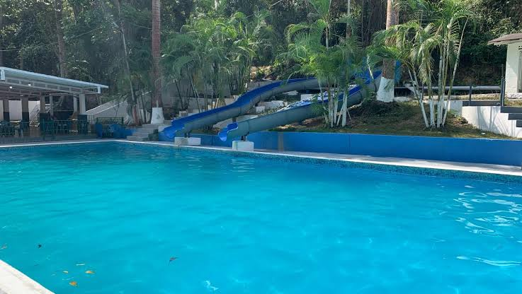
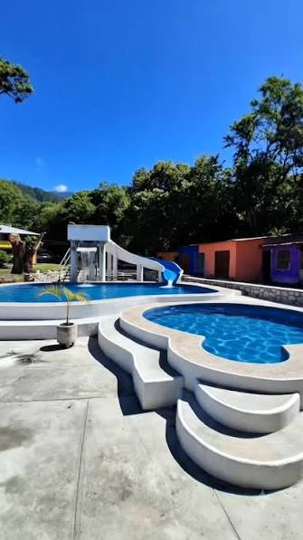
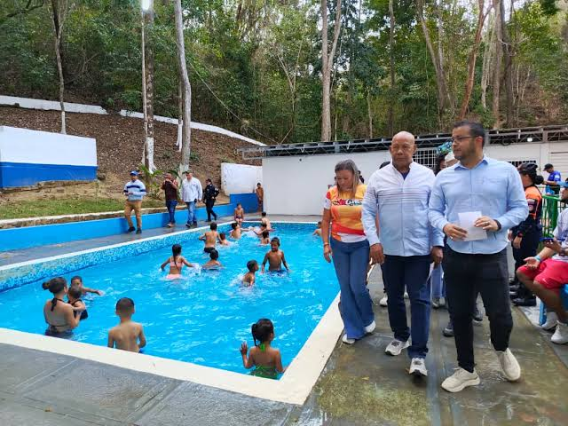
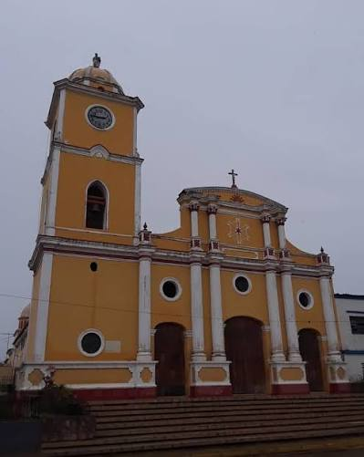
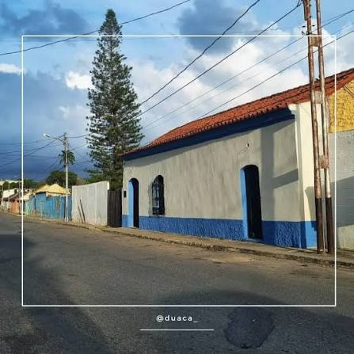
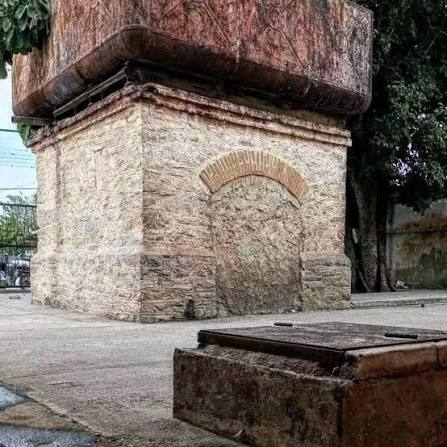
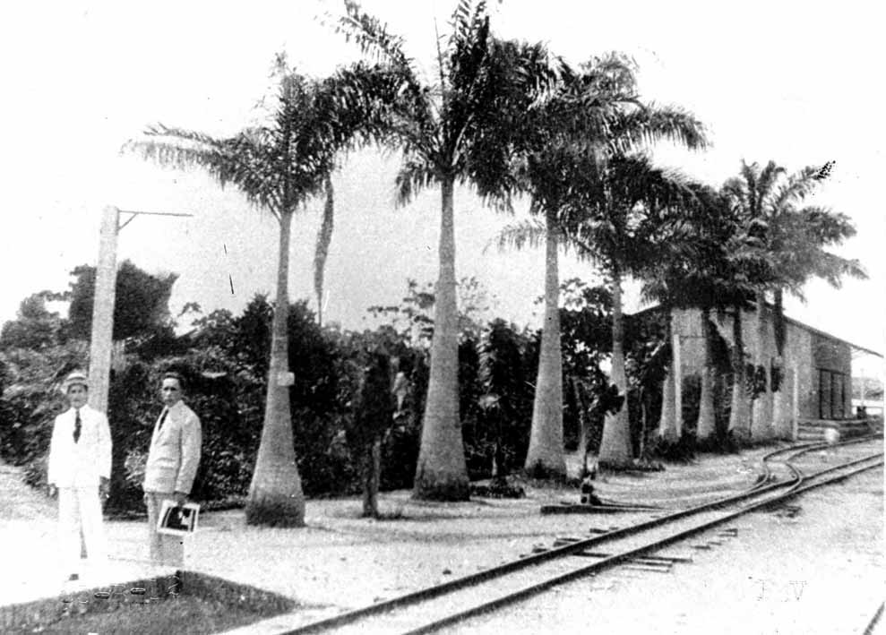
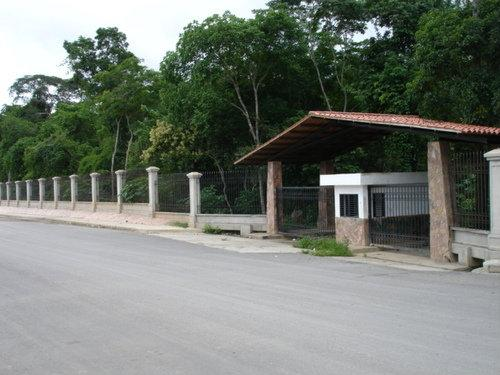
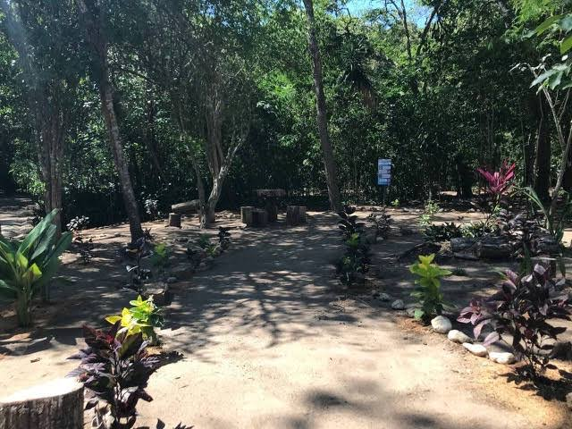
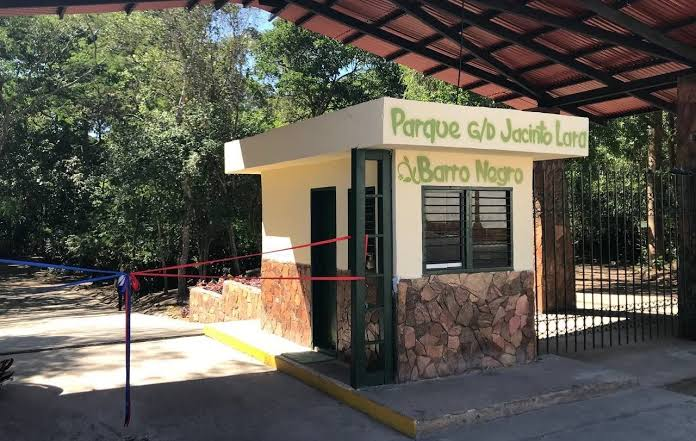

Atractivos y Lugares Turísticos
Explora el potencial turístico de Crespo a través de nuestras galerías fotográficas integradas.
Parque Recreacional El Guape



Conocido popularmente como los Baños de Guape, es el pulmón vegetal y recreativo por excelencia de Duaca. Este hermoso espacio natural resguarda los nacimientos de agua cristalina que abastecen históricamente a la comunidad.
Santuario San Juan Bautista

Es una joya arquitectónica y el faro de identidad espiritual de los crespenses. Este templo católico destaca singularmente en la heráldica nacional debido a sus cinco majestuosas cúpulas visibles desde los accesos terrestres a la ciudad.
Ruta de las Haciendas Cafetaleras



Un viaje en el tiempo hacia la estructura productiva decimonónica de Lara. La ruta abarca legendarias estancias coloniales y de la "Época de Oro" del café (como la antigua Hacienda Stella), enclavadas en las zones altas y montañosas del municipio.
Área Ecológica Barro Negro



Un santuario ambiental protegido que forma parte de las estribaciones de la Serranía de Aroa. Presenta un ecosistema de bosque nublado de imponente biodiversidad, ideal para el senderismo de montaña y avistamiento de aves.